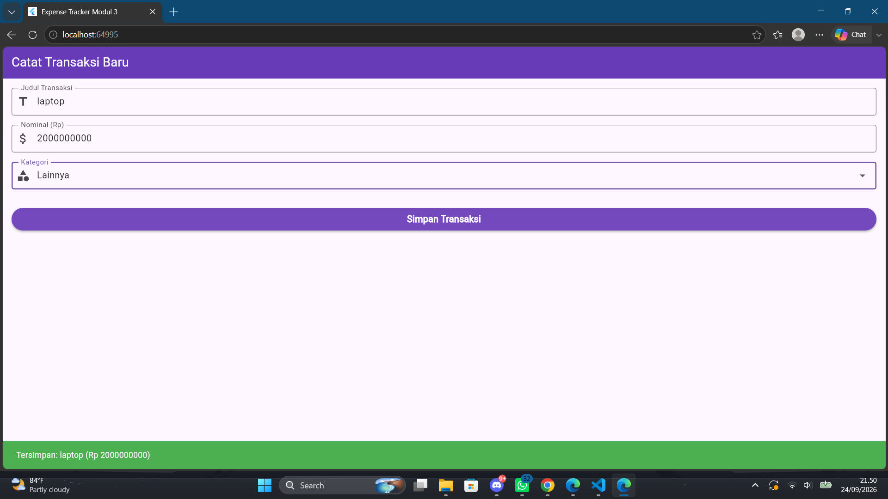
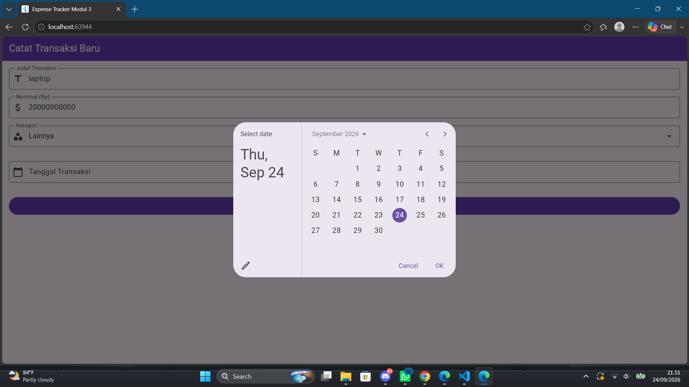
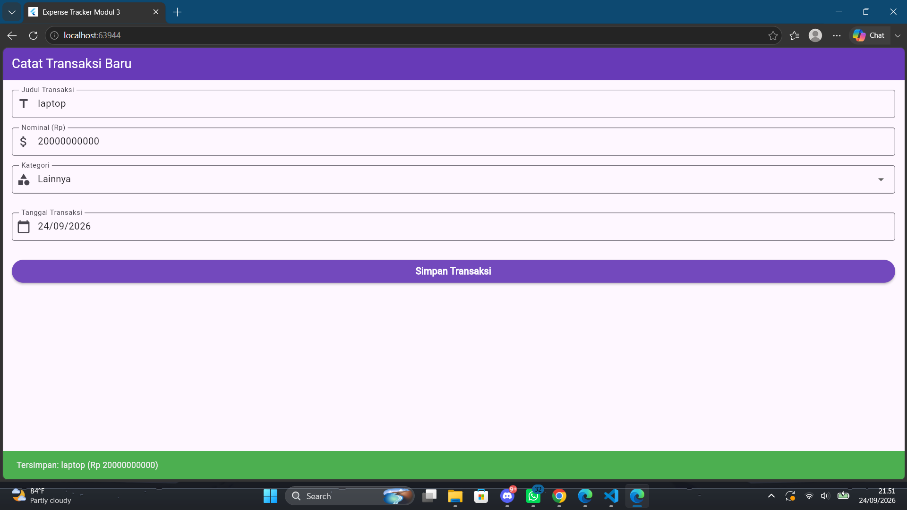

Laporan Praktikum 3
Mata Kuliah: Aplikasi Mobile
A. Langkah Praktikum
1. Persiapan State dan Kontroler
final _formKey = GlobalKey<FormState>();
final _titleController = TextEditingController();
final _amountController = TextEditingController();
@override
void dispose() {
_titleController.dispose();
_amountController.dispose();
super.dispose();
}Pembuatan antarmuka diawali dengan mendefinisikan GlobalKey bertipe FormState yang berfungsi sebagai wadah utama untuk memvalidasi banyak input sekaligus. Penggunaan kunci ini krusial untuk mengikat seluruh komponen isian ke dalam satu status kesatuan. Selanjutnya, dibuat dua buah TextEditingController yang bertindak sebagai pengendali untuk membaca teks yang diketik pengguna pada kolom judul dan nominal. Fungsi dispose pada bagian bawah wajib disertakan untuk membersihkan memori dari kontroler saat halaman ditutup agar aplikasi tidak mengalami kebocoran memori.
2. Widget Form dan Input Teks Terintegrasi
Form(
key: _formKey,
child: Column(
children: [
TextFormField(
controller: _titleController,
decoration: const InputDecoration(labelText: "Judul Transaksi"),
validator: (value) => value!.isEmpty ? "Tidak boleh kosong" : null,
),
TextFormField(
controller: _amountController,
keyboardType: TextInputType.number,
decoration: const InputDecoration(labelText: "Nominal (Rp)"),
validator: (value) {
if (value!.isEmpty) return "Wajib diisi";
if (int.tryParse(value) == null) return "Harus angka";
return null;
},
),Seluruh komponen isian dibungkus oleh widget Form dan dihubungkan dengan variabel formKey yang telah dibuat sebelumnya. Widget TextFormField digunakan untuk menyediakan kolom teks yang mendukung validasi terintegrasi. Pada kolom judul, diberikan properti dekorasi untuk menampilkan label teks petunjuk pengisian. Pada kolom nominal, ditambahkan properti keyboardType dengan nilai TextInputType dot number agar perangkat memunculkan papan ketik khusus angka saat kolom disentuh. Kedua kolom tersebut dilengkapi dengan properti validator yang berguna untuk mencegah masuknya data yang tidak sesuai format sebelum disimpan ke dalam sistem, di mana fungsi akan mengembalikan nilai null jika data valid dan memunculkan teks eror berwarna merah jika data tidak valid.
3. Menu Tarik Turun Kategori
DropdownButtonFormField<String>(
value: _selectedCategory,
items: ['Makanan', 'Transportasi', 'Hiburan'].map((category) {
return DropdownMenuItem(value: category, child: Text(category));
}).toList(),
onChanged: (val) => setState(() => _selectedCategory = val!),
)Untuk pilihan yang sudah pasti, digunakan widget DropdownButtonFormField yang menampilkan menu tarik turun interaktif. Properti items menerima daftar teks kategori yang kemudian dipetakan menjadi serangkaian DropdownMenuItem berisi nilai dan teks label tampilan. Ketika pengguna memilih opsi baru dari daftar tersebut, properti onChanged akan merespons dengan menjalankan fungsi setState untuk memperbarui variabel kategori terpilih dan menggambar ulang tampilan antarmuka dengan pilihan terbaru.
4. Tombol Eksekusi dan Penampil Pesan
ElevatedButton(
onPressed: () {
if (_formKey.currentState!.validate()) {
ScaffoldMessenger.of(context).showSnackBar(
const SnackBar(content: Text('Menyimpan Transaksi...'))
);
}
},
child: const Text("Simpan Transaksi"),
)Komponen terakhir pada formulir adalah ElevatedButton yang berfungsi sebagai tombol pemicu utama. Ketika tombol ini ditekan, sistem menjalankan metode validate dari status formKey untuk memicu seluruh fungsi validator yang ada di setiap kolom secara bersamaan. Apabila seluruh pengecekan mengembalikan nilai valid atau null, program akan mengeksekusi ScaffoldMessenger untuk menampilkan sebuah SnackBar di bagian bawah layar. Pesan ini merupakan umpan balik visual kepada pengguna bahwa instruksi sedang diproses.
5. Output
Aplikasi menampilkan halaman berjudul Catat Transaksi Baru yang didominasi warna tema ungu. Di dalam layar utama, terdapat susunan isian formulir mulai dari Judul Transaksi, kolom Nominal dengan ikon mata uang, menu tarik turun untuk memilih Kategori seperti Makanan atau Transportasi, dan diakhiri dengan tombol berlabel Simpan Transaksi. Apabila pengguna menekan tombol simpan saat isian masih kosong, sistem menolak proses tersebut dan menampilkan teks peringatan berwarna merah tepat di bawah kolom yang belum lengkap. Sebaliknya, jika data diisi dengan benar, perangkat akan memunculkan bilah pesan berwarna hijau dari dasar layar yang menandakan keberhasilan penyimpanan.

Gambar 1: Output Langkah Praktikum
B. LATIHAN
1. Logika Pemilihan Tanggal Kalender
final _dateController = TextEditingController();
Future<void> _selectDate(BuildContext context) async {
final DateTime? pickedDate = await showDatePicker(
context: context,
initialDate: DateTime.now(),
firstDate: DateTime(2000),
lastDate: DateTime(2101),
);
if (pickedDate != null) {
setState(() {
_dateController.text = "${pickedDate.day}/${pickedDate.month}/${pickedDate.year}";
});
}
}Langkah awal untuk menambahkan fitur tanggal adalah dengan menyiagakan satu TextEditingController tambahan khusus untuk menyimpan nilai tanggal. Selanjutnya, disusun sebuah fungsi asinkron selectDate yang bertugas memanggil fitur showDatePicker yang merupakan instruksi utama dari tugas latihan. Fitur ini menampilkan jendela dialog kalender interaktif bawaan material desain. Di dalam pengaturan kalender tersebut ditetapkan waktu awal saat dibuka, batas kalender masa lalu pada tahun dua ribu, serta batas maksimal di tahun dua ribu seratus satu. Apabila pengguna telah memilih hari, fungsi setState akan berjalan untuk memperbarui antarmuka sekaligus merangkai angka tanggal, bulan, dan tahun menjadi satu kalimat format yang kemudian disisipkan ke dalam kontroler teks.
2. Integrasi Widget Kolom Tanggal
TextFormField(
controller: _dateController,
readOnly: true,
decoration: const InputDecoration(
labelText: "Tanggal Transaksi",
prefixIcon: Icon(Icons.calendar_today),
),
onTap: () {
_selectDate(context);
},
validator: (value) {
if (value == null || value.isEmpty) {
return "Tanggal wajib diisi";
}
return null;
},
)Sebuah widget TextFormField baru disisipkan ke dalam susunan formulir tepat sebelum tombol Simpan Transaksi sesuai instruksi. Untuk mencegah pengguna mengetik manual yang rentan terhadap kesalahan format, properti readOnly diatur menjadi aktif sehingga papan ketik bawaan perangkat tidak akan muncul. Sebagai solusi masukannya, fungsi onTap disematkan untuk mendeteksi sentuhan pada kolom tersebut, yang mana secara otomatis akan memanggil fungsi selectDate untuk membuka dialog kalender. Sama halnya dengan masukan lain, kolom ini juga dibekali logika validator wajib diisi untuk menahan proses penyimpanan apabila informasi tanggal masih dikosongkan.
3. Output Latihan
Setelah tugas berhasil diimplementasikan, tampilan formulir mengalami penambahan satu baris kolom isian berlabel Tanggal Transaksi lengkap dengan ikon kalender yang terletak di antara pilihan kategori dan tombol simpan. Keunikannya terletak pada interaksi kolom ini, di mana sentuhan pengguna tidak akan memunculkan papan ketik huruf, melainkan menggeser layar menjadi redup dan memunculkan jendela kalender melayang. Setelah hari, bulan, dan tahun dipilih melalui jendela tersebut lalu dikonfirmasi, tanggal akan tercetak di dalam kolom secara otomatis dengan format susunan angka bergaris miring. Proses validasi juga bekerja di sini sehingga penekanan tombol simpan saat kolom masih kosong akan langsung memunculkan pesan eror peringatan merah di bawah isian tanggal.

Gambar 2: Output Latihan Pemilihan Tanggal Kalender

Gambar 3: Output Latihan Hasil Tanggal
Detail Praktikum 3
- Penggunaan GlobalKey & FormState
- Pengelolaan Input (TextEditingController)
- Validasi Widget (TextFormField)
- Menu Interaktif (DropdownButtonFormField)
- Umpan Balik Visual (ScaffoldMessenger)
- Fitur Asinkron (showDatePicker)